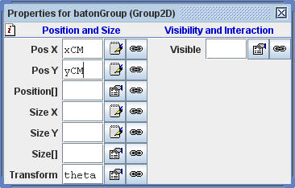

[The baton group inspector panel binds the model's dynamical variables to the group's position.]
The baton throw simulation shows the motion of two unequal masses joined by a massless rod. Trajectories of the center of mass and of one of the masses are displayed. The baton is thrown with a fixed initial velocity and an angular velocity about the center of mass that can be set. The ratio of the masses can also be set using a slider.
The 2D baton throw is a very simple model because the translational (Xcm, Ycm) and rotational θ dynamical variables are independent. The center of mass behaves like a point particle acted on by a constant gravitation force in the downward direction. The horizontal motion is uniform and the vertical motion is described by the kinematics of constant acceleration. As the translational motion evolves, the baton spins about its center of mass with constant angular velocity ω.
[Give CM formulas here.]
EJS makes it straightforward to simulate combined rotational and translational motion. The baton (rigid body) is modeled as a collection of elements within an EJS group. The only mathematical difficulty is the computation of the red ball's trajectory as seen by a stationary observer. This computation is easy because EJS elements have an internal coordinate system known as the Element's body frame. The center of the red ball is at location (0,0) in its own internal body frame and we can transform this coordinates into the external space frame using in the Evolution workpanel as follows:
ballPos=_view.redBall.toSpaceFrame(new double[]{0,0});
Transforming between the space and body frames is a convenient trick in 2D but will become an essential mathematical tool in 3D.
Center or mass coordinates and rotational dynamics are discussed in the following texts:
The baton throw simulation was created by Wolfgang Christian using the Easy Java Simulations (EJS) modeling tool. You can examine and modify the physical model for this simulation if you have Ejs installed by right-clicking within the wave function plot and selecting "Open Ejs Model" from the pop-up menu. Information about Ejs is available at: <http://www.um.es/fem/Ejs/> and in the OSP comPADRE collection <http://www.compadre.org/OSP/>.